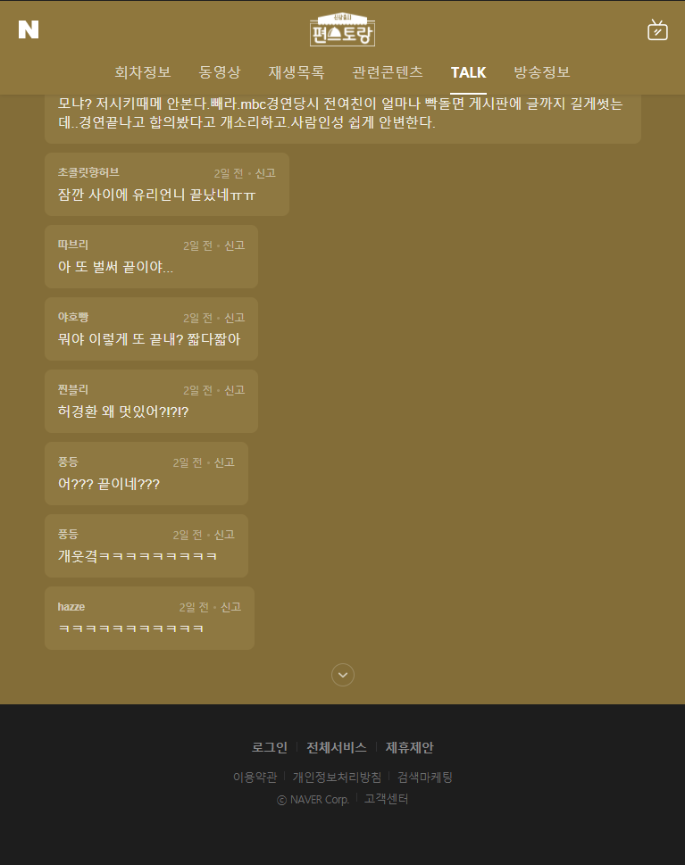

1. TV 프로그램 네이버 톡 크롤링
1.1. Selenium으로 데이터 크롤링
Selenium을 통해 동적인 웹을 크롤링했습니다. 네이버 측에서 좋아하지 않겠지만, 연습을 위해서 크롤링 해보았습니다.
우선 chromedriver를 다운로드 받고 적당한 경로에 둔 다음, driver를 불러 와 원하는 웹사이트에 접속합니다.
from selenium import webdriverpath = r"C:\Users\TFG5076XG\Documents\pythoncodes\chromedriver.exe"driver = webdriver.Chrome(path)driver.implicitly_wait(2) # 초 단위로 기다림
driver.set_window_size(600,800) # 창 크기 조절url = "https://program.naver.com/p/10229879/talk"driver.get(url)
위 페이지에서는 page만큼 버튼을 눌러 모든 댓글을 html에 담은 다음 html 내에서 원하는 정보를 가져오는 방식으로 진행했습니다.
n_of_talk = 39682page_num = (n_of_talk // 20) + 1
page_num## 1985for num in range(page_num):
driver.\
find_element_by_xpath('//*[@id="cbox_module"]/div/div[7]/a/span/span/span[2]').\
click()html = driver.page_sourcesoup = BeautifulSoup(html, "html.parser")comments = soup.find_all("span", class_="u_cbox_contents")comments_df = pd.DataFrame(comments)
comments_df["text"] = comments_df.iloc[:,0].\
apply(lambda x: x.text)
comments_df.columns = ["tag", "text"]텍스트 전처리 과정은 다음의 순서를 따랐습니다.
최대한 형태소 분석기가 형태소 별로 단어를 잘 분리할 수 있도록 만들기 위해 노력했습니다.
이모티콘 제거
기타 부호 제거
제거 후 0의 길이를 가진 리뷰 제거
spell_checker를 통해 맞춤법 검사 후 변경
comments_df = pd.read_csv("comments.csv")
comments_df.drop(["Unnamed: 0", "tag"], axis = 1,
inplace = True)
comments_df.dropna(inplace = True)
comments_df.head()t1 = time.time()
comments_df["text"] = comments_df["text"].\
apply(lambda x: demoji.replace(x, ""))
t2 = time.time()
print("작업 끝:",t2-t1)t1 = time.time()
comments_df["text_mark_rm"] = comments_df["text"].\
apply(lambda x: re.sub("[-=.#/?:&$}~^]", "", x))
t2 = time.time()
print("작업 끝:",t2-t1)comments_df["text_checked"] = ""idx_text_checked = comments_df.columns.get_loc("text_checked")
idx_text_mark_rm = comments_df.columns.get_loc("text_mark_rm")comments_df["text_len"] = \
comments_df["text_mark_rm"].apply(lambda x: len(x))comments_df = comments_df[comments_df["text_len"] != 0]i = 1
while i <= len(comments_df):
try:
print(i)
comments_df.iat[i, idx_text_checked] = \
spell_checker.\
check(comments_df.iat[i, idx_text_mark_rm]).checked
except:
print(i, ":", comments_df["text_mark_rm"].iloc[i])
i = i + 11.2. 라이브러리 및 기본 설정
library(showtext)
font_add_google('Gothic A1', 'gothicA1')
showtext_auto()
library(tidyverse)
library(KoNLP)
`%notin%` <- Negate(`%in%`)
library(ggwordcloud)
library(RColorBrewer)
library(tidytext)1.3. 데이터 불러오기
이를 통해 만들어진 컬럼들은 다음과 같습니다.
text: 원본 텍스트
text_mark_rm: text에서 특수기호 제거 텍스트
text_checked: text_mark_rm에서 맞춤법 검사 텍스트
text_len: text_mark_rm 문자열의 길이
comments_edited = read_csv("comments_edited.csv")
comments_edited = comments_edited %>%
select(-c(X1))head(comments_edited)## # A tibble: 6 x 4
## text text_mark_rm text_checked text_len
## <chr> <chr> <chr> <dbl>
## 1 기태영씨는 이제 안~ 기태영씨는 이제 안 나오~ 기태영 씨는 이제 안 나~ 18
## 2 이유리 배우님 보려~ 이유리 배우님 보려고 기~ 이유리 배우님 보려고 기~ 21
## 3 저번주에 이유리 재~ 저번주에 이유리 재미도 ~ 저번 주에 이유리 재미도~ 44
## 4 아이가 왜 계속나오~ 아이가 왜 계속나오는지~ 아이가 왜 계속 나오는지~ 17
## 5 요리가 이제서야 나~ 요리가 이제서야 나오네 ~ 요리가 이제서야 나오네 ~ 72
## 6 이유리씨는 또 안나~ 이유리씨는 또 안나와요~ 이유리 씨는 또 안 나와~ 141.4. 워드클라우드 준비
KoNLP 패키지를 통해 형태소 분석합니다.
위치, 브랜드에 대한 정보를 가지고 있는 Insighter 사전를 이용했습니다. (링크)
불용어를 제거합니다. (불용어 리스트)
빈출 단어 내에 모호한 단어를 변경합니다.
comments_edited$symbol_removed = str_replace_all(comments_edited$text_checked, "[ㅜㅠㅡㅋㄷㅎㅉz!;]{1,}", "") # 반복 단어 삭제# NIA의 Insighter Dictionary 사용
buildDictionary(ext_dic = c('insighter'),
user_dic = data.frame(term=c("이유리","편스토랑"), tag=c('ncn',"ncn")),
replace_usr_dic = TRUE
)## 637066 words dictionary was built.# 명사 추출 데이터 리스트 생성
noun = extractNoun(comments_edited$symbol_removed)
noun_list = unlist(noun)noun_list_count = table(noun_list)result = noun_list_count %>%
as_tibble() %>%
arrange(desc(n))
result## # A tibble: 10,878 x 2
## noun_list n
## <chr> <int>
## 1 것 2649
## 2 요리 1251
## 3 이유 1214
## 4 님 1183
## 5 한 1145
## 6 나 1113
## 7 편 927
## 8 데 871
## 9 진짜 791
## 10 스토 724
## # ... with 10,868 more rows# 불용어 사전
comments_stopwords = stopwords::stopwords("korean", source = "marimo")comments_stopwords = append(comments_stopwords, c("님"))# 불용어 제거 및 100번 이상 출현 단어
result_edit = result %>%
filter(nchar(noun_list) > 1) %>%
filter(noun_list %notin% comments_stopwords
& n >= 100)word.freq = result_edit %>%
rename(word = noun_list,
freq = n)word.freq[["word"]][word.freq[["word"]] == "스토"] = "편스토랑"
word.freq[["word"]][word.freq[["word"]] == "스토랑"] = "편스토랑"
word.freq[["word"]][word.freq[["word"]] == "이유"] = "이유리"word.freq## # A tibble: 79 x 2
## word freq
## <chr> <int>
## 1 요리 1251
## 2 이유리 1214
## 3 진짜 791
## 4 편스토랑 724
## 5 이정현 593
## 6 오윤아 578
## 7 사람 556
## 8 장민호 538
## 9 방송 535
## 10 음식 441
## # ... with 69 more rows1.5. 출현 빈도 상위 20개 단어
top20 = word.freq %>%
head(20)ggplot(data = top20,
mapping = aes(x = reorder(word, freq), y = freq)) +
geom_col(mapping = aes(fill = freq)) +
coord_flip() +
geom_text(aes(label = freq), hjust = -0.2) +
labs(x = NULL, y = NULL) +
ggtitle("단어 빈도 상위 20 개 단어") +
theme(plot.title = element_text(hjust = 0.5),
legend.position = "none")
1.6. 워드 클라우드
ggplot(data = word.freq,
mapping = aes(label = word, size = freq, color = freq)) +
geom_text_wordcloud(area_corr = TRUE,
grid_size = 64,
max_grid_size = 64) +
scale_size_area(max_size = 16) +
theme_minimal()
편스토랑 프로그램이 ‘요리’와 관련이 있다보니, ’요리’ 키워드가 많이 나왔습니다. 그리고 출연자들의 아이디어로 진행되는 프로그램이다 보니 출연자들의 이름도 많이 언급되었습니다.

1.7. 대표 키워드 감정분석
‘이유리’ 키워드 관련 문장을 추출했습니다.
KNU 한국어 감성사전을 활용했습니다. (링크)
- polarity: 단어의 긍부정 척도
문장별 감정점수를 산출했습니다.
temp = comments_edited %>%
select(symbol_removed)temp_sentences = temp %>%
unnest_tokens(input = symbol_removed,
output = sentence,
token = "sentences")comments_yuri = temp_sentences %>%
filter(str_detect(sentence, "이유리"))head(comments_yuri)## # A tibble: 6 x 1
## sentence
## <chr>
## 1 이유리 배우님 보려고 기다렸는데
## 2 저번 주에 이유리 재미도 있었고 녹색 고추장 만드는 것도 좋았는데 왜 또 안 나옵~
## 3 이유리 씨는 또 안 나와요
## 4 이유리요 초록 고추장 특허 내서 판매하시길 매운 것 좋아한 이들한테는 무척 먹어~
## 5 이유리 씨 지나갔나요
## 6 이유리 창의력은 실력만큼 대단한 거 같음 정말 잘하네dic = read_csv("knu_sentiment_lexicon.csv")dic %>%
filter(polarity == 2) %>%
arrange(word)## # A tibble: 2,602 x 2
## word polarity
## <chr> <dbl>
## 1 가능성이 늘어나다 2
## 2 가능성이 있다고 2
## 3 가능하다 2
## 4 가볍고 상쾌하다 2
## 5 가볍고 상쾌한 2
## 6 가볍고 시원하게 2
## 7 가볍고 편안하게 2
## 8 가볍고 환하게 2
## 9 가운데에서 뛰어남 2
## 10 가장 거룩한 2
## # ... with 2,592 more rowstable(dic$polarity)##
## -2 -1 0 1 2
## 4799 5030 154 2269 2602head(comments_yuri)## # A tibble: 6 x 1
## sentence
## <chr>
## 1 이유리 배우님 보려고 기다렸는데
## 2 저번 주에 이유리 재미도 있었고 녹색 고추장 만드는 것도 좋았는데 왜 또 안 나옵~
## 3 이유리 씨는 또 안 나와요
## 4 이유리요 초록 고추장 특허 내서 판매하시길 매운 것 좋아한 이들한테는 무척 먹어~
## 5 이유리 씨 지나갔나요
## 6 이유리 창의력은 실력만큼 대단한 거 같음 정말 잘하네comments_yuri = comments_yuri %>%
unnest_tokens(input = sentence,
output = "word",
token = "words",
drop = FALSE)comments_yuri = comments_yuri %>%
left_join(dic, by = "word") %>%
mutate(polarity =
ifelse(is.na(polarity), 0, polarity))score_df = comments_yuri %>%
group_by(sentence) %>%
summarise(score = sum(polarity))score_df = score_df %>%
arrange(desc(score))score_df## # A tibble: 1,237 x 2
## sentence score
## <chr> <dbl>
## 1 이유리 편들 이해불가 이정현 오윤아 이유리 이영자 이경규 나온 연예인 출~ 10
## 2 이유리 요리 창의성도 좋고 실력도 좋고 성격도 서글서글순둥순둥 좋아 보~ 8
## 3 이유리 링 적당하게 리액션도 좋고 조율도 잘하고 웃음소리도 귀엽고 예쁘다 7
## 4 이유리 예쁘다 귀여운데 예뻐 그런데 또 잘해 비단이랑도 케미 좋다 7
## 5 그래서 오늘 한 대감 나오고 끝임 아 갈수록 재미없어요 오늘도 오윤아 ~ 6
## 6 이유리 님 팬들이 이정현 님 보고 뭐라 했는지는 모르겠지만 지금 보니까 ~ 6
## 7 이유리 최고 6
## 8 허치유 케미좋다이유리가 주축인데 실력도 좋고 성격도 서글서글 좋아 보여~ 6
## 9 근데 솔직히 저기서 제일 고급 지게 음식 만드는 분은 이정현 씨임 이유리 ~ 5
## 10 어제 저도 허경환 님 이유리 님 황치열 님 세분 케미가 너무 좋아서 너무 ~ 5
## # ... with 1,227 more rowspaste("평균 점수:",round(mean(score_df$score),2))## [1] "평균 점수: 0.22"paste("긍정 리뷰 수:",sum(score_df$score > 0)) ## [1] "긍정 리뷰 수: 258"paste("부정 리뷰 수:",sum(score_df$score < 0))## [1] "부정 리뷰 수: 133"score_df[["sentence"]][[1]] # 감정점수가 가장 높은 댓글 (긍정으로 분류)## [1] "이유리 편들 이해불가 이정현 오윤아 이유리 이영자 이경규 나온 연예인 출연진들은 다 칭찬하고 좋다고 하는데 이유리 팬들은 타 연예인 출연진들 씹기만 하네 왜 그러한지를 모르겠음 이승철 같은 겨우 좋다고 하다가 끝에 뭐라고 하니 팬들한테 거슬리고 안 좋게 보인 것 같고 이렇게 타 연예인 출연자 무조건 싶고 남으란 것 이유리한테도 안 좋음 머라고 한 것에는 이유가 어느 정도 공감되는 이유가 있어야 하는데 전혀 없기에 하는 말임"score_df[["sentence"]][[nrow(score_df)]] # 가장 부정적인 댓글 (부정으로 분류)## [1] "이해와 배려님 제작진이세요 물론 평가할 때 혹평할 수도 있지만 문제는 비웃음과 구체적인 평가가 아닌 감정적 비난, 그리고 한 사람을 향한 부정적인 분위기 형성이죠 음식이 부족한 점이 있다면 어떤 점이 부족하고 어떻게 개선할지 이야기하는 게 진정한 평가 아닐까요 성숙한 심사 문화가 형성되지 않아서 보는 시청자들이 불편한 건데 거기서 이유리 씨를 갑자기 비방하는 것은 무슨 행동인지 정말 이해가 안 되네요"감정점수가 가장 높았던 댓글과 부정적인 댓글을 직접 확인해 볼까요?
확인할 수 있듯이 점수가 가장 높다고 가장 긍정적인 내용의 댓글이라고 할 수 없음을 알 수 있습니다.
정밀한 텍스트 분석을 위해서는 다른 방법을 찾아야 할 것으로 보입니다.